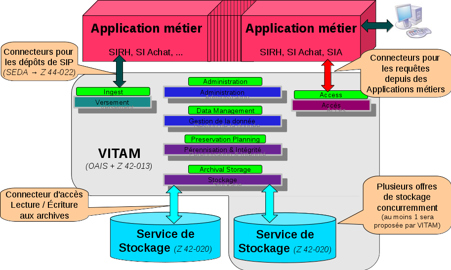
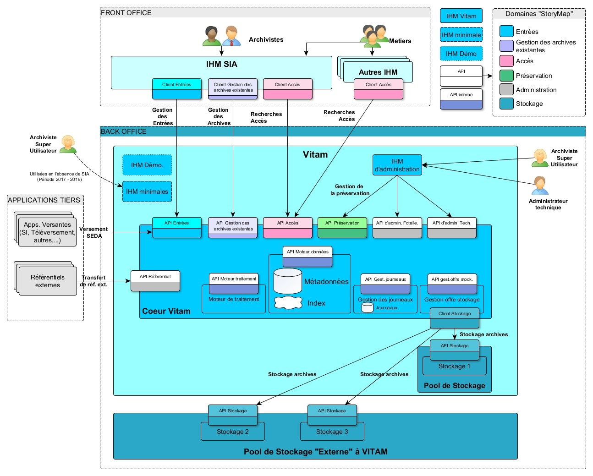

VITAM - Manuel Intégraption Applicative
2.6.1
VITAM
Architecture générale
Architecture des flux
API
Exemples
DSL Java Vitam
Utilisation des clients externes
VITAM - Manuel Intégraption Applicative
Docs
»
VITAM
View page source
VITAM
¶
Architecture générale
¶

Architecture des flux
¶
